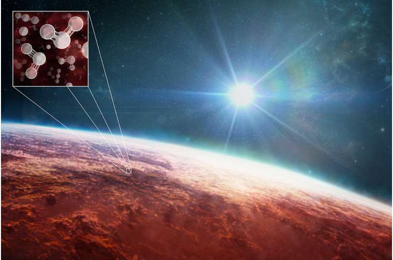

အလင်းနှစ် ၇၀၀ ခန့် အကွာမှာ စေတန် (စနေဂြိုဟ်) နဲ့ ခပ်ဆင်ဆင် တူတဲ့ ဂြိုဟ်တစင်း ရှိပါတယ်။ WASP-39 b လို့ အမည်ပေး ထားတဲ့ ဒီဂြိုဟ်ဟာ အလွန် ပူပြင်းတာကြောင့် သူ့ကို စေတန်ဂြိုဟ်ပူကြီး (Hot Saturn) လို့လဲ ခေါ်ကြပါတယ်။
အရင်က ဒီဂြိုဟ်ရဲ့ လေထုထဲမှာ ပါဝင် ဖွဲ့စည်းထားတဲ့ ဓါတ်ငွေ့ အချို့ကို လေ့လာ နိုင်ခဲ့ ကြပေမယ့် သူ့လေထုထဲက ဓါတ်ငွေ့ ဖွဲ့စည်းပုံ အတိအကျကို ဖော်ထုတ်နိုင်တာကတော့ အခု အချိန်ဟာ ပထမဆုံး အကြိမ် ဖြစ်ပါတယ်။
ဟားဗတ် နှင့် စမစ်ဆိုနီယံ နက္ခတ်ရူပ ဌာန (Center for Astrophysics | Harvard & Smithsonian) က သုတေသီ မာစီးဒီးစ် လိုလက်စ် မိုရေးလ် (Mercedes López-Morales) က အခုရရှိတဲ့ အချက်အလက် တွေထဲက မော်လီကျူး အမျိုးမျိုးနဲ့ ပတ်သက်တဲ့ အချက်အလက် တွေရဲ့ ကြည်လင်ပြတ်သား မှုက အံ့မခန်း ပါပဲ လို့ မှတ်ချက် ချခဲ့ပါတယ်။
“အရင်ကတဲက ဒီလို အချက်အလက်တွေ ရမယ်ဆိုတာ ခန့်မှန်း ထားပြီး သားပါ။ ဒါပေမယ့် တကယ် တွေ့ရတဲ့ အခါမှာတော့ အံ့ဩတကြီး ဖြစ်သွားမိပါတယ်” လို့ သူက ပြန်ပြောင်း ပြောပြပါတယ်။
အခု အချက်အလက် တွေဟာ ဒီ ဂြိုဟ်ပေါ်က ဓါတ်ငွေ့ တိမ်တိုက်တွေ ရဲ့ ပုံသဏ္ဍာန် ဘယ်လို ရှိမလဲဆိုတာကိုပါ ဖော်ပြ နေပါတယ်။ အရင် တိုင်းတာချက်တွေလို တိမ်လွှာပြင် တပြင်ကြီး မြင်ရတာမျိုး မဟုတ်ပဲ တိမ်လွှာ တစ်ခုချင်း စီကို အသေးစိတ် တိုင်းတာ နိုင်ခဲ့ ကြတာ ဖြစ်ပါတယ်။

အခုလို တိုင်းတာမှုကို ဂျိမ်းစ်ဝက်ဘ် တယ်လီစကုပ် ပေါ်မှာ တပ်ဆင်ထားတဲ့ တိုင်းတာရေး ကိရိယာ အများအပြား ကို ပူးတွဲ အသုံးချပြီး တိုင်းတာခဲ့ ကြတာ ဖြစ်ပါတယ်။ ဒီလို အချက်အလက် မျိုး ရရှိဖို့ ဂျိမ်စ်ဝက်ဘ် မတိုင်မီ ကဆို ဘယ်လိုမှ မဖြစ်နိုင်တဲ့ အရာ တခု ဖြစ်ပါတယ်။
အခု တွေ့ရှိချက် တွေဟာ များပြားလွန်းလို့ သိပ္ပံ သုတေသန စာတမ်း ၅ စောင်တောင် ခွဲပြီး တင်ပြ ကြရပါတယ်။ ဒီ တွေ့ရှိချက် တွေထဲမှာ ပြင်ပဂြိုဟ်တစင်းပေါ်မှာ ဆာလ်ဖာဒိုင် အောက်ဆိုဒ် (sulfur dioxide) ကို ပထမဆုံး ရှာဖွေ တွေ့ရှိမှုလဲ အပါအဝင် ဖြစ်ပါတယ်။
ဆာလ်ဖာဒိုင် အောက်ဆိုဒ်ဟာ မိခင်ကြယ်က လာတဲ့ စွမ်းအားပြင်း အလင်းရောင်ကြောင့် ဖြစ်ပေါ်လာတဲ့ ဓါတု ဓါတ်ပြုမှုကြောင့် ဖြစ်ပေါ်လာတဲ့ ဓါတ်ငွေ့ ဖြစ်ပါတယ်။ ဒါဟာ ကမ္ဘာပေါ်က အိုဇုန်းလွှာ ဖြစ်ပေါ် လာတဲ့ သဘာဝနဲ့ အလားတူ တဲ့ ဓါတ်ပြုမှု ဖြစ်စဉ် တစ်ခု ဖြစ်ပါတယ်။
ဒီလို ဆာလ်ဖာဒိုင် အောက်ဆိုဒ် ရှာတွေ့တာဟာ မျှော်လင့် မထားခဲ့တဲ့ တွေ့ရှိမှု တခု ဖြစ်ပါတယ်။ ဒီအချက်က ကြယ်ရဲ့ အလင်းရောင်ကြောင့် ဖြစ်ပေါ်လာတဲ့ ဓါတ်ပြုမှု တွေဟာ ဒီ ဂြိုဟ်ရဲ့ ရာသီဥတု အပေါ် အကျိုးသက်ရောက်မှု ရှိတယ်ဆိုတဲ့ အထောက်အထား တစ်ခု ဖြစ်ပါတယ်။
ကမ္ဘာ့ ရာသီဥတု ဟာလဲ ဒီလို အလင်းဓါတု ဓါတ်ပြုမှု (photochemistry) ရဲ့ အကျိုးသက်ရောက်မှုကြောင့် ဖြစ်ပေါ် လာရတာ ဖြစ်ပါတယ်။ ဒီတော့ ဒီ တွေ့ရှိချက်ဟာ အခု စေတန်ဂြိုဟ်ပူကြီးနဲ့ ကျွန်တော်တို့ ကမ္ဘာနဲ့ အကြား တူညီမှု တစ်ခု ဖြစ်ပါတယ်။
ဒီ WASP-39 b ဂြိုဟ်ရဲ့ မျက်နှာပြင် အပူချိန်ဟာ ဒီဂရီ စင်တီဂရိတ် ၉၀၀ ခန့် ရှိပါတယ်။ နောက်ပြီး သူ့ရဲ့ လေထုထဲမှာ အဓိက ပါဝင်ဖွဲ့စည်း ထားတာကလဲ ဟိုက်ဒြိုဂျင် ဓါတ်ငွေ့ ဖြစ်ပါတယ်။ ဒီ အချက်တွေကြောင့် ဒီဂြိုဟ်ပေါ်မှာ သက်ရှိတွေ ရှင်သန် ပေါက်ဖွားဖို့ မဖြစ်နိုင် ဘူးလို့ ပညာရှင် တွေက ယူဆ ကြပါတယ်။
ဒီ ဂြိုဟ်ရဲ့ ဒြပ်ထု ပမာဏဟာ စနေဂြိုဟ်ရဲ့ ဒြပ်ထုနဲ့ ပမာဏ တူညီမယ်လို့ ယူဆ ရပါတယ်။ ဒါပေမယ့် သူ့ရဲ့ အရွယ်ကတော့ ကြာသပတေးဂြိုဟ်ရဲ့ အရွယ်လောက် ရှိမယ်လို့ ခန့်မှန်း ရပါတယ်။
ဒီ ဂြိုဟ်ပေါ်မှာ သက်ရှိတွေ ရှင်သန်ဖို့ အခြေအနေ မရှိပေမယ့် အခု ရှာဖွေ တွေ့ရှိ မှုကနေ အခြား ဂြိုဟ်တွေပေါ် သက်ရှိတွေ ရှာဖွေနိုင်မယ့် နည်းလမ်းသစ်တွေ ထွက်ပေါ်လာနိုင် လိမ့်မယ်လို့ ပညာရှင် တွေက မျှော်လင့် ကြပါတယ်။
ဒီ ဂြိုဟ်နဲ့ မိခင်ကြယ်ရဲ့ အကွာအဝေး ကလဲ နေနဲ့ အနီးဆုံး ဖြစ်တဲ့ မာကြူရီ ဂြိုဟ်နဲ့ နေကြား အကွာအဝေးရဲ့ ၈ ပုံ ၁ ပုံ လောက်ပဲ ရှိပါတယ်။ ဒီလောက် နီးကပ်နေတဲ့ အတွက် ဒီဂြိုဟ်ပေါ်ကို မိခင်ကြယ်က ရေဒီယို ဓါတ်ရောင်ခြည် သက်ရောက်မှု တွေကို လေ့လာနိုင်ဖို့ အခွင့်အလမ်း လဲ ရရှိ လာခဲ့ပါတယ်။
WASP-39 b ရဲ့ လေထုထဲမှာ အခြား ဒြပ်စင် တွေကိုလဲ ရှာဖွေ တွေ့ရှိ ခဲ့ပါတယ်။ ဒီ ရှာဖွေ တွေ့ရှိ မှုတွေထဲမှာ ဆိုဒီယံ၊ ပိုတက်ဆီယမ် နဲ့ ရေငွေ့ တွေလဲ ပါဝင်ပါတယ်။ နောက်ထပ် အရေးပါတဲ့ တွေ့ရှိ မှု တရပ်ကတော့ ကာဗွန်ဒိုင် အောက်ဆိုဒ်ကို ဂြိုဟ်ရဲ့ လေထုအတွင်း ရှာဖွေ တွေ့ရှိ ခဲ့ခြင်းပဲ ဖြစ်ပါတယ်။
ကာဗွန်ဒိုင် အောက်ဆိုဒ် နဲ့အတူ ကာဗွန် မို နောက်ဆိုဒ်ကိုလဲ ရှာဖွေ တွေ့ရှိ ခဲ့ပါတယ်။ ဒါပေမယ့် မျှော်လင်းထား ခဲ့တဲ့ မိသိန်း နဲ့ ဟိုက်ဒြိုဂျင် ဆာလ်ဖိုဒ် ဓါတ်ငွေ့တွေကိုတော့ ရှာဖွေ တွေ့ရှိရခြင်း မရှိပါဘူး။
အခုလို ဓါတ်ငွေ့တွေကို ရှာဖွေ တွေ့ရှိ တာဟာ ဂျိမ်းစ်ဝက်ဘ်ရဲ့ အားကောင်းတဲ့ အင်ဖရာရက် အာရုံခံ ကိရိယာ တွေရဲ့ အစွမ်းကြောင့် ဖြစ်ပါတယ်။ ဒီ ဓါတ်ငွေ့တွေကို ပုံမှန် အလင်းဖမ်းတဲ့ တယ်လီစကုပ် တွေနဲ့ မြင်တွေ့နိုင်မှာ မဟုတ်ပါဘူး။
ဒီလို ဓါတ်ငွေ့တွေကို ဖမ်းယူနိုင်ဖို့ WASP-39 b ဂြိုဟ်က မိခင်ကြယ် ရှေ့က ဖြတ်သွားချိန်ကို စောင့်ဆိုင်းပြီး တိုင်းတာခဲ့တာ ဖြစ်ပါတယ်။ မိခင်ကြယ်ရဲ့ အလင်းက ဂြိုဟ်ရဲ့ လေထုကို ဖြတ်သွားတဲ့ အချိန်မှာ လေထုထဲက ဓါတ်ငွေ့တွေက အလင်းရဲ့ အချို့ အရောင်တွေကို ဖမ်းယူ ထားလိုက်ပါတယ်။ ဒီအချိန် ကြယ်ကလာတဲ့ အလင်းရောင် ထဲက ပျောက်ဆုံးနေတဲ့ အရောင်တွေကို ရှာဖွေ ကြည့်ခြင်းဖြင့် လေထုထဲမှာ ဘယ်ဓါတ်ငွေ့တွေ ရှိမလဲ ဆိုတာကို သိပ္ပံ ပညာရှင်တွေ အနေနဲ့ သိရှိနိုင်မှာ ဖြစ်ပါတယ်။
Ref: James Webb Space Telescope reveals an exoplanet atmosphere as never seen before | Phys